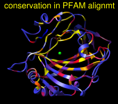
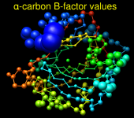

Render by Attribute shows attribute values of atoms, residues, and models:
| Colors | Radii | Worms |
|---|---|---|
|  |  |
|
There are several ways to start Render by Attribute, a tool in the Depiction and Structure Analysis categories.
The first step is to choose one or more models. The Models list includes all open molecule models. Individual models or blocks of models can be chosen with the left mouse button. Ctrl-click toggles the status of an individual model. To choose a block of models without dragging, click on the first (or last) and then Shift-click on the last (or first) in the desired block.
The next step is to choose an attribute. Only the attributes of the chosen models will be listed. For rendering, these may include the numerical attributes:
Additional numerical attributes can be:
If Render/Select by Attribute was opened before values were assigned for some attribute, the new attribute can be listed using Refresh... Menus. When attribute values have been changed or parts of the chosen models have been deleted, the display can be updated with Refresh... Values. The data will refresh automatically, however, when the set of chosen models is changed.
Once an attribute has been chosen, a histogram of the corresponding values is shown. Histogram bar heights are logarithmic by default, but can be changed to linear (and back) with the Scaling menu.
Thresholds for defining the interpolation function (for Colors, Radii, or Worms) are shown as vertical bars on the histogram. Clicking on a threshold shows its Value in black. Clicking elsewhere within the histogram shows the Value (X-coordinate) of the mouseclick in gray. A threshold can be moved by changing its Value and then pressing Enter (return) or by dragging it horizontally with the left mouse button. Holding the Shift key down reduces the speed (mouse sensitivity) of threshold dragging tenfold, allowing finer control. Thresholds can be added by Ctrl-clicking with the left mouse button on the histogram. Ctrl-clicking on an existing threshold deletes it.
The rendering can be restricted to the current selection (Restrict OK/Apply...). OK performs the rendering and dismisses the dialog, whereas Apply performs the rendering without dismissing the dialog. Close simply dismisses the dialog. Help opens this manual page in a browser window.
Atoms and surfaces (molecular, VDW) can be colored by atom, residue, or model attribute values; ribbons can be colored by residue or model attribute values. Besides a Value (position on the histogram), each threshold has a Color. The Color applies to the threshold most recently moved or clicked and can be adjusted by clicking the adjacent color well.
The thresholds define a function that maps attribute values to colors. For each atom (residue, model) the attribute value is compared to the thresholds on the histogram. Color is defined by red, green, blue and opacity/transparency components. The color of the closest threshold at a lower value (to the left) and the color of the closest threshold at a higher value (to the right) are linearly interpolated. Items with attribute values less than the leftmost threshold are colored according to the leftmost threshold, while items with attribute values greater than the rightmost threshold are colored according to the rightmost threshold. The Keep opaque options for atom and ribbon coloring indicate that any transparency in the color definitions should be ignored.
There may be cases where the atoms (residues, models) have no value for the chosen attribute. For example, nucleic acid residues do not have kdHydrophobicity values, and residues not associated with a position in a sequence alignment open in Multalign Viewer do not have mavPercentConserved values. In these cases, the No-value color (also shown in a color well) applies.
Create corresponding color key opens the Color Key dialog and populates it with the current threshold colors and values; a color key can then be created interactively with the mouse.
See also: rangecolor, Values at Atom Positions, Surface Color, Coulombic Surface Coloring
Atom radii can be assigned according to atom, residue, or model attribute values. The Atom style controls which draw mode will be used for the affected atoms (ball or sphere). Ball radius equals atom radius multiplied by a model's ball scale factor, whereas sphere radius is the same as atom radius.
Besides a Value (position on the histogram), each threshold has an associated Atom radius, expressed in angstroms. The Atom radius value corresponds to the threshold most recently moved or clicked and can be adjusted by entering a different number.
The thresholds define a function that maps attribute values to atom radii. For each atom (residue, model) the attribute value is compared to the thresholds on the histogram. The atom radius of the closest threshold at a lower value (to the left) and the atom radius of the closest threshold at a higher value (to the right) are linearly interpolated. Atoms (or atoms within residues or models) with attribute values less than the leftmost threshold are assigned the atom radius of the leftmost threshold, while those with attribute values greater than the rightmost threshold are assigned the atom radius of the rightmost threshold.
When there are atoms (residues, models) with no value for the chosen attribute: if Affect no-value atoms is true, atoms (or atoms within residues or models) with no value will be assigned the No-value radius. Otherwise, the radii of these atoms will not be changed.
Radii can be returned to their default values with the command ~vdwdefine.
Worm radii can be assigned according to residue or model attribute values. Worms are ribbons with a special scaling that depends on attribute values instead of secondary structure. Rendering as worms displays a ribbon for the affected residues in the style named rounded with the special scaling. Like other ribbons, worms can be shown only for amino acid and nucleic acid residues bonded to at least one other residue. The Worm style controls whether the radius is smoothed continuously along the ribbon (smooth) or changes abruptly for each residue (segmented). To obtain standard, secondary-structure-dependent ribbons after rendering as worms, it is necessary to render again with the Worm style set to non-worm.
Besides a Value (position on the histogram), each threshold has an associated Worm radius, expressed in angstroms. The Worm radius value corresponds to the threshold most recently moved or clicked and can be adjusted by entering a different number.
The thresholds define a function that maps attribute values to worm radii. For each residue (or model) the attribute value is compared to the thresholds on the histogram. The worm radius of the closest threshold at a lower value (to the left) and the worm radius of the closest threshold at a higher value (to the right) are linearly interpolated. Residues (or residues within models) with attribute values less than the leftmost threshold are assigned the worm radius of the leftmost threshold, while those with attribute values greater than the rightmost threshold are assigned the worm radius of the rightmost threshold.
When there are residues (or models) with no value for the chosen attribute: if Affect no-value residues is true, residues (or residues within models) with no value will be shown as worms with the No-value worm radius, unless the Worm style is non-worm. Rendering with the non-worm style restores the standard ribbon for all affected residues.
Select by Attribute allows selection of atoms, residues and models by their attribute values. It can be opened by choosing By Attribute Value... from the Chimera Select menu or Structure... Select by Conservation from the menu in in Multalign Viewer.
One must choose one or more models and then one of the attributes available for the chosen models. These may include the numerical attributes available for rendering plus the following string-valued and boolean attributes:
Once an attribute has been chosen, a histogram (if numerical), list (if character strings), or set of checkbox options (if boolean) of the corresponding values is shown. The data can be refreshed after new attributes have been added, attribute values have been changed, or parts of the chosen models have been deleted.
OK performs the selection and dismisses the dialog, whereas Apply performs the selection without dismissing the dialog. Close simply dismisses the dialog. Help opens this manual page in a browser window.
An attribute and its associated values can be saved to an attribute assignment file by choosing File... Save Attributes from the menu of Render/Select by Attribute.
The attribute to save, its level (atoms, residues, or models), and the model(s) to include should be chosen from the menus in the resulting save dialog. Additional options: